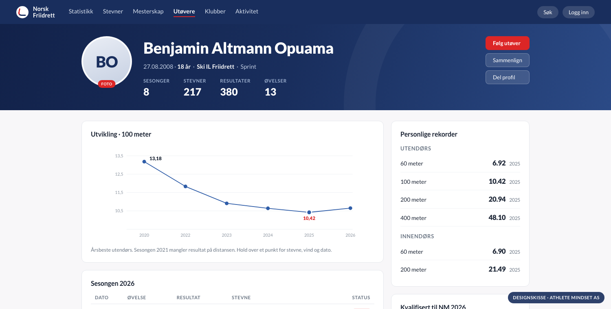
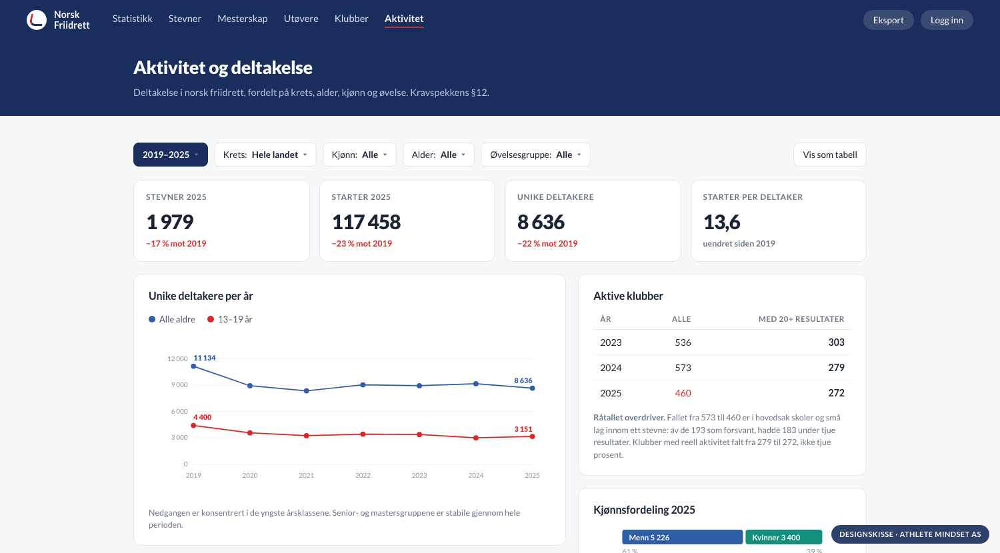

Athlete Mindset AS · org.nr. 937 878 818 · del av Fire S Invest AS
Idrettsteknologi og idrettsdata · agentvirksomhet · trenervirksomhet
| Atle Guttormsen | PhD anvendt økonometri · WA-dommer · styreerfaring klubb, krets og forbund |
| Simen Guttormsen | PhD-stipendiat kvantitativ finans · Princeton, Duke · olympier |
| Sondre Guttormsen | Sport management, UT Austin · gründer Athlete Mindset Inc. · olympier |
Vi driver friidrettsresultater.no i dag.
resultater i drift, normalisert og søkbare
| Fra 2013 og senere | 1 704 877 |
| Alle-tiders-materiale før 2013, tilbake til 1922 | 248 479 |
| Utøvere | 87 939 |
| Stevner | 48 548 |
| Siste stevne inne | 2. september 2026 |
Migreringen er gjennomført. Vi skal ferdigstille, ikke bygge fra bunnen.
§2 setter to formål: tilgang for utøvere, klubber, trenere, media og publikum, og innsikt for forbundet i aktivitet, deltakelse og utvikling. Vi svarer på begge.
Det må ligge i bunn, og vi regner med at alle som byr på dette klarer det. En database med resultater i er ikke et konkurransefortrinn.
| Å forstå hvordan dataene bør behandles | Aldersklasser etter kalenderår. Håndtidtaking kun under 800 m. Redskap og hekkhøyde per klasse. Regler, ikke programmering. |
| Å kunne rette det som er galt | Feil oppstår i alle baser. Spørsmålet er om noen finner dem, og om det finnes verktøy for å rette dem. |
| Å vite hva folk faktisk er ute etter | Utøveren, treneren, klubben, statistikkmiljøet, media og forbundet vil ha helt ulike ting ut av de samme tallene. |
friidrettsresultater.no

Foto av utøveren, utviklingskurve, status mot NM-krav og klubbhistorikk. Norsk Friidretts farger og typografi.

Filtre på år, krets, kjønn, alder og øvelsesgruppe. Tallene er ekte, hentet fra basen. Dette er §12 som skjermbilde.
Samme base, seks ulike behov.
| Hvem | Vil ha |
|---|---|
| Utøveren | Egen profil, egne rekorder, egen utvikling over tid |
| Treneren | Årslister per aldersklasse, sammenligning, dybde i egen øvelse |
| Klubben | Egne utøvere, klubbrekorder, hvem som er kvalifisert |
| Statistikkmiljøet | Alle-tiders-lister, full dybde, eksport til eget arbeid |
| Media | Hva som kan skje i helgen, rekordvarsler, ferdig faktagrunnlag |
| Forbundet | Aktivitet, rekruttering, frafall, per krets og aldersklasse |
Filtrering på elleve dimensjoner er ønsket i §17. Åtte er i drift i dag. Region, distanse og kvalitetsnivå kommer i høst.
Fire klubber har allerede fått skreddersydde rapporter, bygget rett på basen:
| Klubb | Utøvere | Resultatrader | Klubbens eget ønske |
|---|---|---|---|
| SK Vidar | 222 | 1 412 | Alder, yngste først, med markering av klubbskifte |
| IK Tjalve | 141 | 1 066 | Stipendgruppe A–D, øvrige etter alder |
| BUL | 178 | 1 364 | Alle samlet, yngste først |
| Fana IL | 55 | 310 | Seksten navngitte først, i klubbens rekkefølge |
De deler felles maskineri. En ny klubb er rundt tjue linjer konfigurasjon.
Klubbene fikk ulik sortering og merking fordi de ba om ulike ting, ikke fordi arbeidet ble gjort fire ganger. Når grunnlaget er solid, er slike leveranser dager, ikke måneder.
Det er det egentlige spørsmålet, og svaret er rutiner.
| Egen innsamling fra oktober | Plattformen blir førstemottaker av hver resultatliste, direkte fra arrangør og tidtakersystem. Begge kilder kjøres parallelt ut året. |
| Kontroll mot kilden | Hvert stevne telles mot kilden, ikke bare sjekkes om det finnes. Kjøres rutinemessig, ikke ved mistanke. |
| Automatiske kontroller | Systemet løfter fram det som ikke henger sammen, og legger det i en arbeidsliste med begrunnelse. |
| Norske resultater i utlandet | Utøverdrevet overvåking framfor stevnedrevet. TFRRS for collegeutøvere. Registrert innmeldingskanal for utøver og klubb. |
| Sporbarhet | Hvert tall kan følges tilbake til stevnet, kilden og tidspunktet det ble hentet. |
Innsamling er en driftsfunksjon på linje med nettstedet, ikke en engangsjobb. Den ligger i driftsavtalen, ikke som opsjon.
Resultat bedre enn norsk rekord · urimelig persforbedring · manglende vind i vindavhengig øvelse · presisjon som ikke stemmer med tidtakingsmetode · aldersklasse mot fødselsår · redskapsvekt mot klasse · samme utøver to steder samme dag
Vi kjørte basen mot SRUs NM-regneark for 100 m kvinner. Regnearket hadde 101 navn, vi fant 97, 89 var de samme.
Avvikene var navnevarianter, en navneendring og en utenlandsk utøver i norsk klubb. Nettopp det §9 og §7 ber plattformen håndtere. Det er arbeidslisten.
Vi lover ikke en feilfri base. Vi lover at feilene er kjente, tellbare og synkende, og at det finnes verktøy for å rette dem.
Kravspekken kaller dette «particularly important» for rekruttering og medlemsutvikling. Tallene under er hentet fra basen i dag, ikke lovet til 2027.
| År | Stevner | Starter | Unike deltakere | 13–19 år |
|---|---|---|---|---|
| 2019 | 2 380 | 152 677 | 11 134 | 4 400 |
| 2021 | 2 005 | 95 079 | 8 338 | 3 234 |
| 2023 | 2 067 | 128 627 | 8 914 | 3 367 |
| 2025 | 1 979 | 117 458 | 8 636 | 3 151 |
§12 ber om aktivitet per klubb. Teller man klubber med registrerte resultater, faller tallet fra 573 i 2024 til 460 i 2025. Tjue prosent.
Råtallet overdriver kraftig. Av de 193 enhetene som forsvant, hadde 183 under tjue resultater — skoler og små lag innom ett stevne. Teller man bare klubber med reell aktivitet, er fallet fra 279 til 272.
Et dashbord som rapporterer tjue prosent som klubbdød, gir forbundet feilinformasjon. Det er forskjellen på å telle og å forstå.
Troppanalyser før NM, EM, VM og OL. Rankingposisjon, formkurver, historisk sammenligning. Ferdig som nettside og som pressemateriell.
Rapporter som verktøy for lokalt utviklingsarbeid, i den formen klubben ber om.
Aktivitet, rekruttering og frafall per krets og aldersklasse. Og: konsekvensen av å endre et kvalifiseringskrav kan beregnes før vedtaket fattes, ikke observeres to år etter.
Norske friidrettsdata er allerede grunnlag for fagfellevurderte studier i Journal of Science and Medicine in Sport og PLOS ONE, den eldste fra 2015.
To mesterskapspakker og én årsrapport inngår i grunnavtalen.
| Frist | Leveranse |
|---|---|
| Okt | Egen innsamling av resultatlister, uavhengig av dagens base |
| Nov | Kvalitetsnivå A/B/C med regelmotor og filtrering |
| Nov | Generisk importrammeverk · eksport til Excel og CSV |
| Des | Flagging: bane TR14.1/TR43.1, World Rankings, blandede heat, utenlandske utøvere, WMA, ikke-ratifisert |
| Des | Dokumentert JSON-API · regions- og kretsstatistikk |
| Des | Masters og aldersklasserekorder · WCAG 2.1 AA · DPIA og databehandleravtale |
Den viktigste milepælen er innsamlingen, ikke funksjonaliteten.
NFIF arbeider med Buypass om iSonen mot OpenTrack og FriRes, og mot EQ Timing. Plattformen skal ta imot enden av den dataflyten, ikke definere den på nytt.
Vi trenger stevne, øvelse, klasse, utøver, klubb, resultat, vind og tidtakingsmetode — i den formen som er minst arbeid for stevnesystemene.
| Fase | Innhold | Periode |
|---|---|---|
| 2 | Integrasjoner · automatisert import · rollestyring | Q1–Q3 2027 |
| 3 | Løp utenfor bane, avgrenset til terminlisten | Q1–Q3 2027 |
| 3 | Aktivitetsmodul og dashbord for forbund og kretser | Q2–Q4 2027 |
| Til hva | Når | |
|---|---|---|
| Terminlisten, løpende | Avgjør godkjenning, og dermed kvalitetsnivå etter §6 | Snarest |
| Lisensregisteret | Lisenskriteriet i nivå A | Snarest |
| Klubb-til-krets-mapping | Kretsstatistikk. Kan ikke utledes trygt fra klubbnavn. | Snarest |
| Kontaktpunkt mot arrangører og tidtakere | Egen innsamling av resultatlister | September |
| Melding om underkjente stevner | Oppdatering av kvalitetsnivå og §7-koder | Fra oppstart |
Migreringen er gjennomført. Åtte av fjorten obligatoriske krav er i drift. Det er utgangspunktet, ikke argumentet.
Vi forstår regelverket som ligger under tallene, vi har verktøy for å finne og rette feil, og vi vet hva utøvere, trenere, klubber og media er ute etter.
Doktorgrad i anvendt økonometri og WA-dommerkompetanse i samme person. To olympiere med egne resultater i basen.
Takk. Spørsmål?